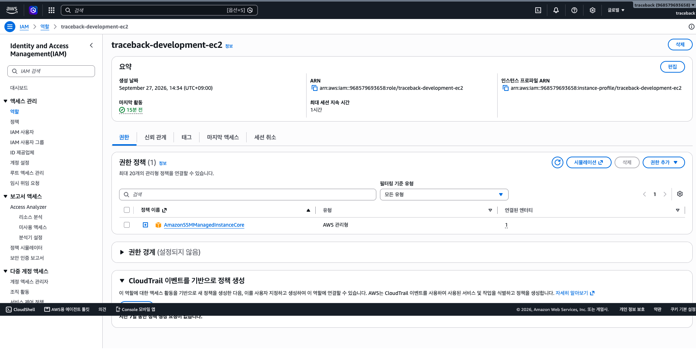

Mac → AWS Session Manager → EC2 Agent
운영자의 AWS 권한으로 세션을 요청하고 EC2의 Agent가 AWS 서비스와 통신합니다. 인바운드 SSH 22나 SSH 키 배포가 필요 없습니다. 사람의 세션 권한, EC2 IAM role, Agent의 HTTPS outbound가 필요합니다.
TRACEBACK 실제 구성 · 02 / 05 · 운영자 접속
목표는 내 Mac 터미널에서 개발 서버 traceback-development-app의 Linux 셸을 여는 것입니다. 먼저 경로를 고르고 설정한 뒤 실제 명령으로 접속합니다. EC2는 AWS가 제공하는 가상 컴퓨터 서비스이고, 인스턴스는 여기서 만든 서버 한 대입니다.
세 경로는 같은 EC2 셸에 도착합니다. 출발 신원과 중간 장치, 열어야 할 네트워크 길이 다릅니다.
운영자의 AWS 권한으로 세션을 요청하고 EC2의 Agent가 AWS 서비스와 통신합니다. 인바운드 SSH 22나 SSH 키 배포가 필요 없습니다. 사람의 세션 권한, EC2 IAM role, Agent의 HTTPS outbound가 필요합니다.
Mac의 SSH 클라이언트가 서버의 SSH 서비스에 연결합니다. 주소, 네트워크 규칙, 로그인 키와 Linux 사용자를 관리해야 합니다. TRACEBACK 개발 서버는 인바운드 22를 닫아 이 경로를 쓰지 않습니다.
외부에서 닿는 관리용 중간 서버를 거쳐 내부 EC2에 연결합니다. 대상 EC2의 직접 노출을 줄일 수 있지만 중간 서버의 접근·패치·비용도 운영해야 합니다. TRACEBACK에는 bastion이 없습니다.
왜 SSM을 골랐나요? 개발 서버 한 대에 접속하려고 bastion을 추가 운영하지 않고, SSH 22 인바운드를 열지 않기 위해서입니다. 대신 AWS 권한과 Agent 상태를 관리합니다. AWS Session Manager 설명
IAM Identity Center에 운영자를 할당하고 대상 EC2에 ssm:StartSession 권한을 줍니다. 로컬 AWS CLI profile 이름은 traceback-dev입니다. 2026-10-04 기록의 Permission Set은 넓은 AdministratorAccess였으므로 접속에 꼭 필요한 최소 권한이라고 설명하지 않습니다.
서울 ap-northeast-2의 개발 EC2 i-051f85a1ac4e64a2c에 instance profile traceback-development-ec2와 AmazonSSMManagedInstanceCore를 연결했습니다. 2026-10-04 기록에는 Agent가 Online이었습니다. 사람의 StartSession 권한과 EC2 Agent 권한은 별개입니다.
보안 그룹 인바운드는 웹용 80/443을 허용하고 22는 열지 않았습니다. 당시 아웃바운드 전체 IPv4 허용과 인터넷 경로가 Agent의 HTTPS 통신을 가능하게 했습니다. private subnet 서버라면 NAT 또는 관련 VPC endpoint 같은 별도 출구가 필요합니다.
IAM Identity Center에서 운영자에게 AWS 계정 접근과 Permission Set을 할당합니다. CLI용 SSO start URL·SSO region은 본인의 AWS access portal에서 확인합니다. 당시 사용한 Permission Set은 AdministratorAccess였고, SSM 접속만 위해 필요한 최소 권한은 아닙니다. 이후 대상 인스턴스의 ssm:StartSession으로 제한하는 권한 설계가 남아 있습니다. 여기서 사람에게 주는 권한은 EC2 role에 붙이는 정책과 별개입니다.
IAM → Roles에서 EC2가 맡을 role traceback-development-ec2에 AmazonSSMManagedInstanceCore를 연결했습니다. EC2 → Instances → 개발 인스턴스 → Security → Modify IAM role에서 이 role의 instance profile을 지정했습니다. Systems Manager의 관리 대상에서 Agent가 Online인지 확인했습니다. 이 화면은 2026-09-27 캡처이며 현재 연결 상태를 대신하지 않습니다.

EC2 인스턴스에 연결된 Security Group의 inbound에서 TCP 80/443은 허용하고 22 규칙은 두지 않았습니다. outbound는 당시 전체 IPv4 허용이었습니다. 개발 EC2가 있는 public subnet의 인터넷 경로를 통해 Agent가 AWS 서비스의 HTTPS endpoint에 닿는 구조입니다. EC2의 443 inbound는 고객 API용이고, SSM Agent가 AWS로 나가는 443 outbound와 목적이 다릅니다. route table·NACL·현재 Online 상태는 접속 시 다시 확인합니다.
EC2/인스턴스: 가상 컴퓨터 서비스와 그 안의 서버 한 대.
IAM role/instance profile: EC2가 AWS API를 호출할 때 맡는 신원과 그 신원을 EC2에 붙이는 연결.
Identity Center/SSO: 사람의 조직 로그인과 할당된 AWS 계정 접근.
SSM Agent/Session Manager: 서버 안의 관리 프로그램과 셸 세션을 중계하는 서비스.
SSH: 원격 셸 연결 프로토콜. 직접 접속 때는 서버의 SSH 서비스로 가는 길이 필요합니다.
bastion: 내부 서버 앞에 두는 관리용 중간 서버.
inbound/outbound: 어느 컴퓨터가 새 연결을 시작하는지에 따른 방향.
포트 22/443: 각각 SSH의 흔한 기본 포트와 HTTPS의 기본 포트입니다.
이 단계는 서버 생성이 아닙니다. 이미 준비된 EC2에 세션을 엽니다. Mac에는 AWS CLI와 Session Manager plugin이 있어야 합니다.
aws configure sso본인의 AWS 포털에서 확인한 start URL, SSO region, 할당 계정과 Permission Set, CLI 기본 리전 ap-northeast-2, profile 이름 traceback-dev를 입력합니다. 이미 profile이 있으면 반복하지 않습니다.
aws sso login --profile traceback-dev
aws sts get-caller-identity --profile traceback-dev --query Account --output text두 번째 명령의 계정 번호가 968579693658인지 확인합니다. 다른 번호면 접속하지 않고 profile을 확인합니다. SSO 로그인은 Mac의 AWS 신원을 준비하며 아직 EC2 셸을 열지 않습니다.
command -v session-manager-plugin
aws ssm describe-instance-information --region ap-northeast-2 --profile traceback-devplugin이 보이고 대상 인스턴스가 Online이어야 합니다. 목록에 없으면 EC2 실행 상태, Agent, instance profile, 아웃바운드 경로를 설정 탭의 순서대로 확인합니다.
aws ssm start-session \
--target i-051f85a1ac4e64a2c \
--region ap-northeast-2 \
--profile traceback-dev프롬프트가 바뀌면 EC2 안입니다. whoami로 Linux 사용자를 확인하고, 마치면 exit로 나옵니다. aws ssm traceback-dev는 이 명령을 부르는 현재 Mac의 사용자 정의 셸 함수이며 AWS 기본 명령이 아닙니다.
접속 뒤의 권한: /opt/traceback은 root 전용이라 ssm-user가 바로 들어가지 못할 수 있습니다. 관리자 권한을 확인한 후 sudo -i를 사용합니다. private RDS 5432 연결은 별도 경로입니다.
확인 시점: 2026-10-04에는 Agent Online과 접속 기록이 있습니다. 지금의 로그인·인스턴스 상태는 재검증하지 못했습니다.
--profile: 내 Mac에 저장한 AWS 계정·SSO 선택을 고릅니다.
--region: EC2가 있는 AWS 리전을 지정합니다.
--target: 접속할 인스턴스 ID입니다. 계정 번호와 다릅니다.
Managed node Online: Systems Manager가 Agent와 통신 중이라는 상태입니다.
셸: 명령을 읽고 실행 결과를 보여주는 프로그램.
Linux 사용자: 셸 안에서 파일 접근 권한을 결정하는 OS 계정입니다. ssm-user와 AWS SSO 사용자는 다른 신원입니다.
\: 셸에서 긴 명령을 다음 줄로 이어 쓰는 문자입니다.